flowchart LR A[Raw Tables] --> B[Data Connection] B --> C[Data Modeling] C --> D[Calculations] D --> E[Filters and Parameters] E --> F[Visual Analysis] F --> G[Interactive Dashboard]
Tableau Session 02: Intermediate Visual Analytics
DATA MODELING
ADVANCED CHARTS
CALCULATIONS
PARAMETERS
FILTERING
Learning Goals
By the end of this session, students will be able to:
- Connect Tableau to relational databases such as PostgreSQL and Microsoft SQL Server
- Understand the difference between live and extract connections
- Combine data using relationships, joins, unions, and blending
- Understand Tableau’s logical and physical data model
- Create calculated fields at different levels of evaluation
- Use basic Tableau functions in analytical calculations
- Apply Level of Detail (LOD) expressions correctly
- Use parameters for interactive analysis
- Understand Tableau’s filter order of operations
- Build advanced analytical charts such as area charts, bullet charts, and box plots
- Design interactive dashboards with actions, filters, and tooltips
Overview
This session moves from basic chart building to analytical modeling and interactive dashboard design.
You will learn how Tableau:
- Connects to relational databases
- Combines data from multiple tables and sources
- Evaluates calculations at different levels of detail
- Uses filters and parameters to control analytical logic
- Supports advanced chart types for deeper insight
- Enables interactive dashboards for exploratory analysis
Note
By the end of this class, you should be able to model multi-table data correctly, create advanced analytical views, and build interactive dashboards that respond to user input in a controlled and predictable way.
Introduction: From Flat Tables to Analytical Models
In real-world analytics, data rarely exists in a single flat file.
Business questions usually span multiple entities such as:
- Customers
- Orders
- Products
- Locations
- Time
Poor data modeling can lead to:
- Incorrect aggregations
- Duplicated values
- Slow dashboards
- Misleading conclusions
Tableau provides several ways to combine and evaluate data. Choosing the correct method is essential for both accuracy and performance.
Dataset Used in This Session
For this session, we use a multi-table retail dataset consisting of:
- customers.csv
- customer_addresses.csv
- orders.csv and quarterly order files
- order_details.csv
- products.csv
- returns.csv
- salespeople.csv
This dataset represents a real-world analytical scenario where multiple tables must be combined to answer business questions.
Connecting to Databases
Beyond Excel and CSV files, Tableau can connect directly to relational databases.
Common enterprise sources include:
- PostgreSQL
- Microsoft SQL Server
- MySQL
- Snowflake
- Oracl
- Google BigQuery
Tableau Desktop and Tableau Cloud support these connectors. Tableau Public does not support direct database connections.
Why Use Database Connections
Connecting Tableau to a database allows you to:
- Query data without exporting it into flat files
- Reuse existing warehouse tables, views, and SQL logic
- Refresh dashboards with current data
- Support multi-table analysis
- Push heavy computation to the database engine
- Improve governance and consistency in reporting
Note
For production dashboards, direct database connectivity usually provides better scalability and better control over data freshness than manually exported files.
Tableau Desktop Connectors to SQL Server
Tableau Desktop can connect directly to Microsoft SQL Server for both exploratory analysis and production reporting.
SQL Server is widely used because it supports:
- Large relational schemas
- Strong authentication options
- Views and stored procedures
- Live querying and extract workflows
- Enterprise-grade data governance
Why Use a SQL Server Connector
A SQL Server connection is useful when you want to:
- Query large datasets directly
- Build dashboards on top of trusted data models
- Reuse business logic defined in SQL views
- Control performance using indexing and database optimization
- Reduce duplication of transformation logic in Tableau
Connection Types: Live vs Extract
Tableau supports two main connection modes:
- Live connection
- Extract connection
Live Connection
A live connection queries the underlying database every time the user interacts with the dashboard.
Use it when:
- Data must be up-to-date
- The database is well optimized
- Dashboard queries are not excessively heavy
- Freshness is more important than speed
Considerations:
- Performance depends on database speed, network, and query complexity
- Complex dashboards may become slow
- Inefficient data models can create long load times
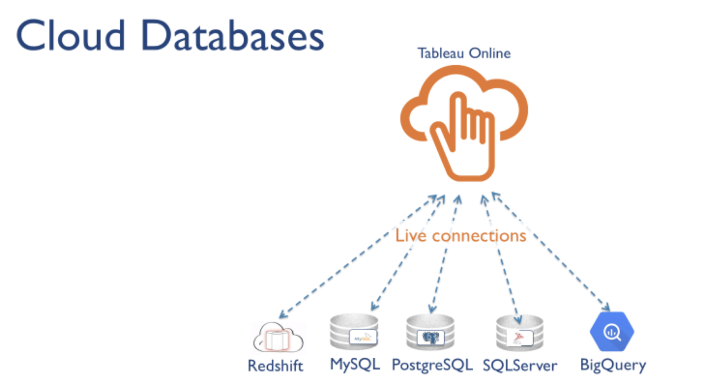
Extract Connection
An extract copies data into Tableau’s .hyper format.
Use it when:
- Dashboard performance is critical
- Data does not need real-time updates
- Dashboards contain complex calculations
- Many users will access the dashboard
Considerations:
- Data can become outdated between refreshes
- Refresh schedules must be managed
- Extract design should align with upstream refresh timing
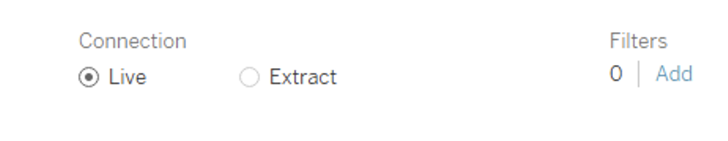
Tip
For exploratory work and many production dashboards, extracts are often the best choice because they improve speed and reduce pressure on the source database.
Step-by-Step: Connect Tableau to SQL Server
- Open Tableau Desktop
- Under Connect, choose Microsoft SQL Server
- Enter the connection details:
- Server: SQL Server hostname or IP
- Database: target database name (optional at first)
- Authentication:
- Windows (recommended in corporate environments)
- SQL Server (username/password)
- Windows (recommended in corporate environments)
- Click Sign In
- After connecting, use the Data Source page to choose tables, views, or custom SQL
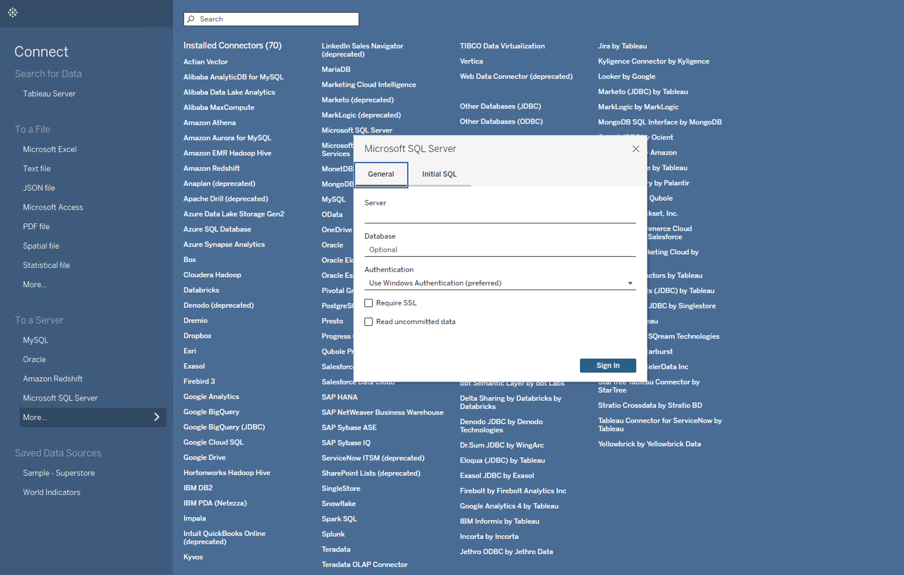
Choosing the Right Objects: Tables, Views, or Custom SQL
When connecting Tableau to a database, you can work with several object types.
Tables
Use raw tables when:
- You need maximum flexibility
- You understand the grain of the data
- You will model logic directly in Tableau
Risks:
- Incorrect joins
- Duplicated rows
- Repeated business logic
Views
Views are often better when:
- Business logic is already defined in SQL
- KPI definitions must be standardized
- Tableau users should not manage underlying complexity
Advantages:
- Cleaner Tableau layer
- Better governance
- Less repeated logic
Custom SQL
Custom SQL allows you to write your own SQL query directly in Tableau.
Use it when:
- You need a targeted query
- You want to pre-aggregate or reshape data
- You need logic that is easier to express in SQL than in Tableau
Caution:
- Overly complex custom SQL can hurt performance
- It may be harder to maintain than trusted warehouse views
Stored Procedures
Stored procedures can be useful when:
- The result set is pre-optimized
- Expensive computation already exists in SQL
- Controlled logic is required
Behavior depends on how the procedure returns data.
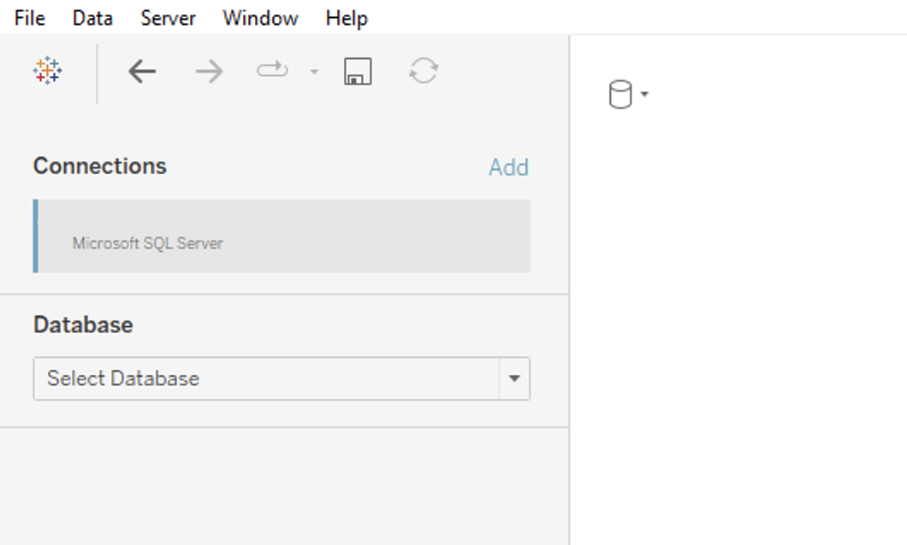
Note
In enterprise environments, trusted views are usually preferable to raw tables because they centralize business logic and reduce inconsistencies across dashboards.
Example: Simple SQL View for Tableau
The following example shows a warehouse view that prepares clean sales data for Tableau.
CREATE VIEW dbo.vw_sales_summary AS
SELECT
o.order_id,
o.order_date,
c.customer_id,
c.region,
p.category,
od.quantity,
od.unit_price,
od.quantity * od.unit_price AS line_revenue
FROM dbo.orders o
JOIN dbo.order_details od
ON o.order_id = od.order_id
JOIN dbo.customers c
ON o.customer_id = c.customer_id
JOIN dbo.products p
ON od.product_id = p.product_id;Creating Extracts
Extracts can be created in Tableau Desktop or on the web. Tableau copies data from the remote source into an optimized local structure (.hyper file), which is stored on disk either locally or on Tableau Server or Tableau Cloud.
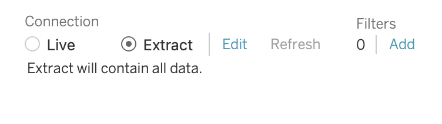
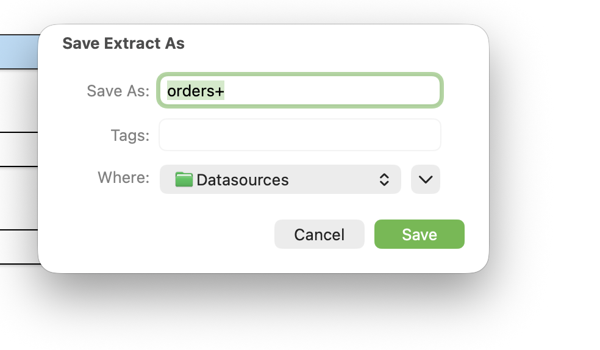
When creating an extract, Tableau allows you to control:
- Storage structure
- Filters
- Aggregation
- Sampling
- Incremental refresh settings
Tip
It is better to finalize the data model before creating an extract. Structural changes later may invalidate the extract and require rebuilding it.
Extract Properties
When creating an extract, you can configure:
- How the extract stores data
- Which rows are included
- Whether data is aggregated
- Whether incremental refresh is used
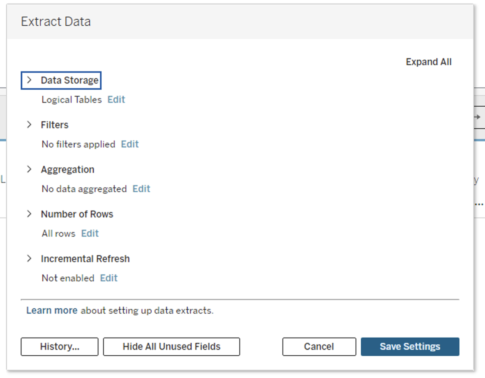
Decide How the Extract Data Should Be Stored
You can choose between:
- Logical Tables (denormalized schema)
- Physical Tables (normalized schema)
Logical Tables
Logical tables store one extract table per logical table in the data model.
This works well when:
- Relationships are used
- Tables should remain conceptually separate
- Tableau should resolve combinations dynamically
Physical Tables
Physical tables store one extract table per physical table.
This can be useful when:
- Equality joins are used
- You want tighter control over storage
- You want to reduce extract size in some scenarios
Extract Filters
Extract filters limit the data before it is stored in the extract.
Use them to:
- Reduce file size
- Improve performance
- Limit historical range
Aggregate Data for Visible Dimensions
This option aggregates measures at the visible dimension level.
Benefits:
- Fewer rows
- Smaller extract size
- Better performance
Choose the Rows to Extract
You can select:
- All rows
- Top N rows where supported
Tableau applies filters and aggregation before sampling.
Incremental Refresh
Incremental refresh adds only new rows since the previous refresh.
Benefits:
- Faster refreshes
- Less load on source systems
Risk:
- Schema changes usually require a full refresh
Note
If the structure of the source data changes (e.g., a new column is added), you must do a full refresh before incremental refresh can resume.
Date/Time Precision Consideration
The Tableau data engine stores time values with precision up to 3 decimal places.
If your database uses higher precision, incremental refresh can create duplicates.
Example:
- Database rows:
2015-03-13 17:30:56.5023522015-03-13 17:30:56.502852
- Tableau stores both as:
2015-03-13 17:30:56.502
This can result in duplicate rows after refresh.
Tableau Data Model
Tableau separates data modeling into two layers:
- Logical layer
- Physical layer
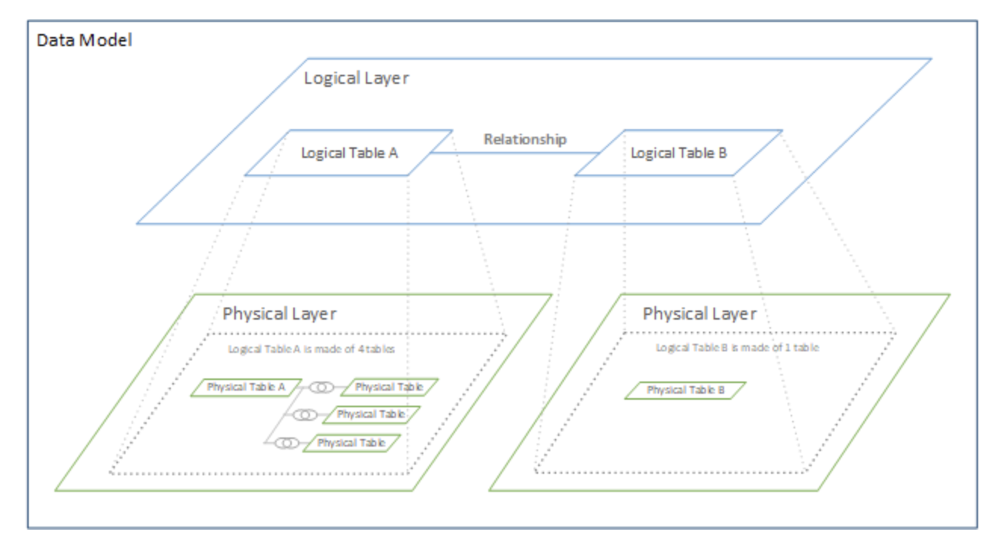
Logical Layer
The logical layer uses relationships.
Characteristics:
- Tables remain separate
- Tableau combines them at query time based on the view
- Reduces duplication risk
- Recommended for most analytical models
Physical Layer
The physical layer uses joins and unions.
Characteristics:
- Tables are merged into a single physical structure
- Behavior is fixed
- Row duplication risk is higher
- Useful when exact row-level structure is required
Relationships vs Joins vs Unions vs Blending
Relationships
Relationships connect tables logically rather than physically.
Use relationships when:
- Queries are done based on the view
- Fact and dimension tables should remain separate
- One-to-many or many-to-many structures exist
Benefits:
- More flexible querying
- Lower duplication risk
- Better default behavior for analytics
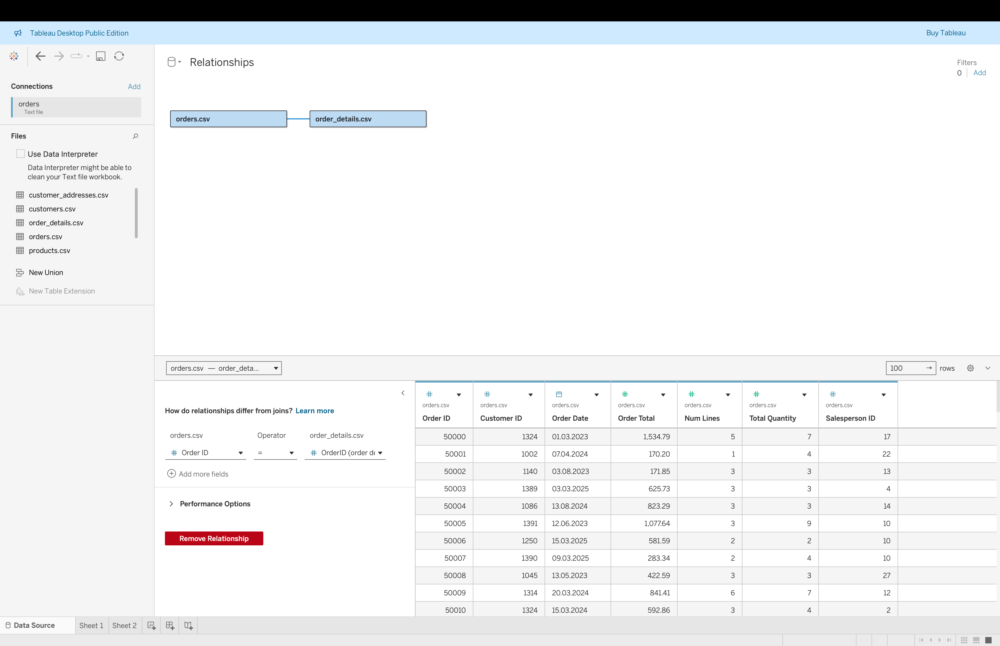
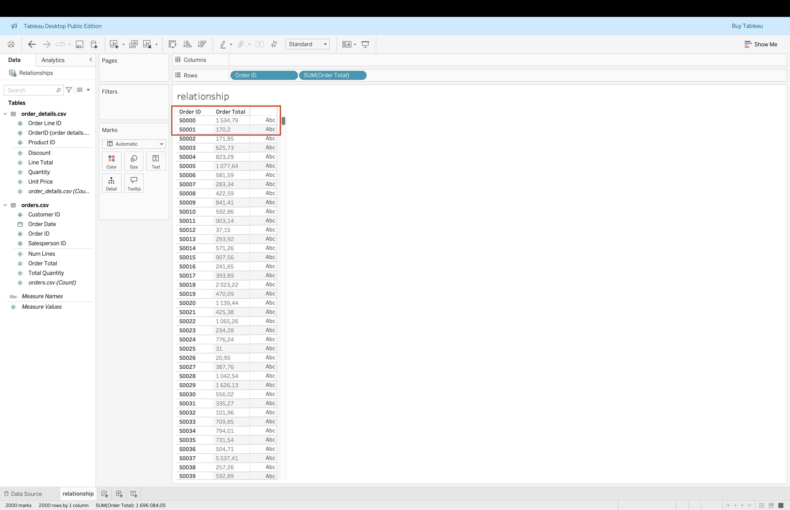
Steps to Create Relationships (Based on Example)
- Open the Data Source page
- Drag
orders.csvto the canvas
- Drag
order_details.csvnext to it
- Tableau creates a relationship line between tables
- Click on the relationship line
- Set condition:
Order ID = OrderID (order_details)
- Validate that no duplication appears in aggregated view
Joins
Joins combine tables horizontally using matching keys.
Common join types:
- Inner Join returns only records that have matching keys in both tables, excluding any rows that do not exist on both sides.
- Left Join keeps all records from the left table and adds matching data from the right table, inserting
NULLvalues when no match exists. - Right Join keeps all records from the right table and adds matching data from the left table, inserting
NULLvalues when no match exists. - Full Outer Join keeps all records from both tables, returning matched rows where possible and
NULLvalues where matches are missing.
Use joins when:
- You need a fixed row-level structure
- Tables share a clear grain
Risks:
- Duplicated rows if grains do not match
- Inflated aggregations
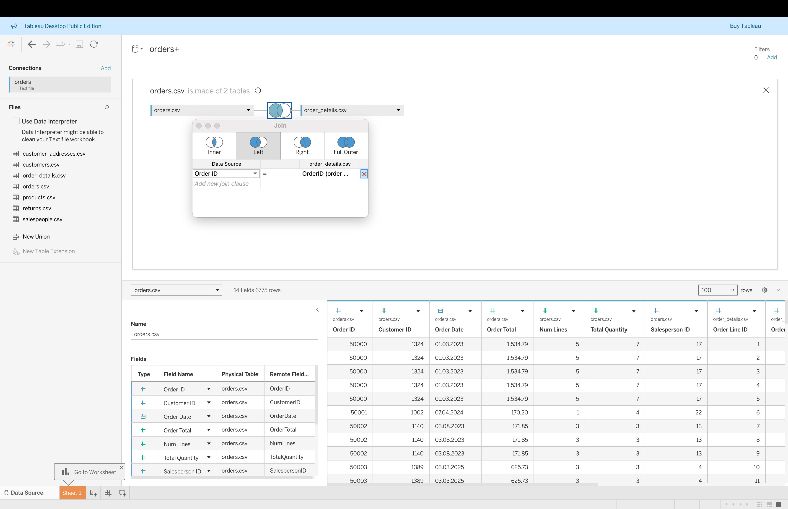
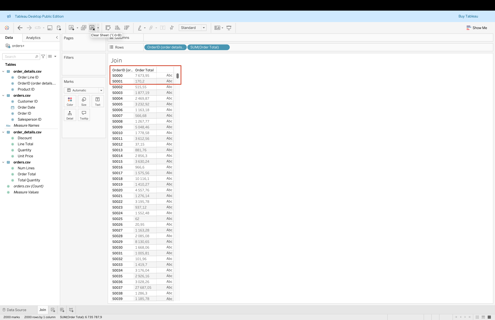
Steps to Create Joins (Based on Example)
- Double-click
orders.csvto enter physical layer
- Drag
order_details.csvinto the canvas
- Choose Left Join
- Set join condition:
Order ID = OrderID
- Review preview → notice duplicated rows due to multiple order lines
- Validate aggregation issues using
SUM(Order Total)
Unions
Unions stack tables vertically.
Use unions when:
- Tables have the same structure
- Files are split by month, year, or source
Rules:
- Columns should align by name and type
- Missing columns create
NULLs
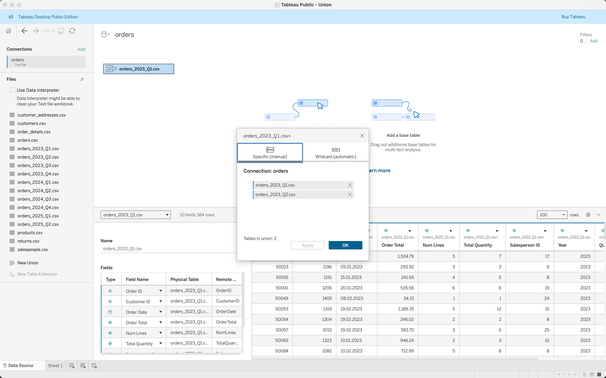
Steps to Create Manual Union (Specific)
- Drag
orders_2023_Q1.csvto canvas
- Drag
orders_2023_Q2.csvbelow it
- Repeat for all quarterly files
- Tableau creates a union step-by-step
- Click the union object to review included tables
- Validate column consistency and data types
Steps to Create Wildcard Union (Automatic)
- Drag one file (e.g.,
orders_2023_Q1.csv) to canvas
- Click the dropdown → choose New Union
- Select Wildcard (automatic)
- Define pattern:
- Example:
orders_*.csv
- Example:
- Tableau automatically includes all matching files
- Validate that all expected files are included
- Check for schema consistency across files
Blending
Blending combines multiple data sources at the visualization level.
Characteristics:
- One primary source
- One or more secondary sources
- Aggregation happens before linking
Use blending when:
- Multiple independent data sources must appear in one view
- A direct relational model is not available
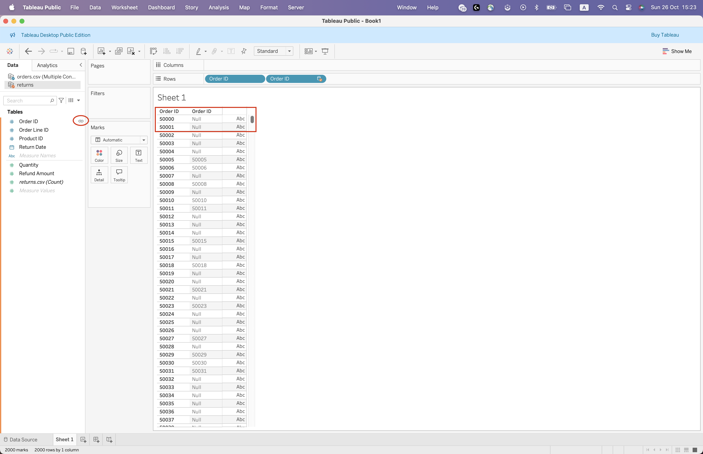
Steps to Create Blending (Based on Example)
- Connect to
orders.csvas primary source
- Add
returns.csvas secondary source
- Open a worksheet
- Drag
Order IDfrom primary
- Drag
Order IDfrom secondary
- Ensure linking icon appears
- Observe
NULLvalues where no match exists
Comparison Summary
| Method | Layer | Adds Rows | Adds Columns | Multiple Sources |
|---|---|---|---|---|
| Relationship | Logical | No | No | No |
| Join | Physical | No | Yes | No |
| Union | Physical | Yes | No | No |
| Blend | Visualization level | No | No | Yes |
Note: When using joins, the same row may appear multiple times.
This can inflate aggregated values such as SUM([Order Total]).
Final Data Model for further analysis
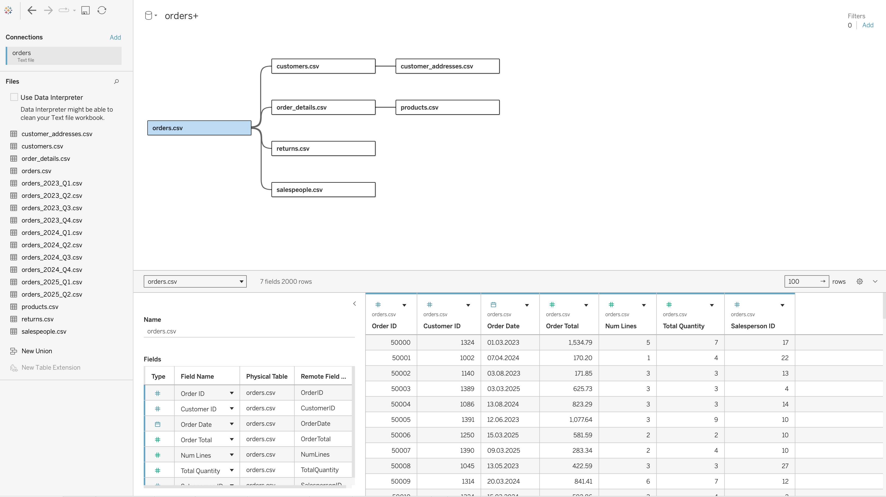
|Final Data Model Explanation
The final data model is built using relationships in the logical layer, not joins.
The central table in this model is orders.csv, which acts as the fact table. All other tables are connected to it or through it using appropriate keys.
This structure allows Tableau to dynamically determine how tables should be combined based on the visualization.
Why Relationships Are Used
Relationships are preferred in this model because the dataset contains tables with different levels of granularity.
For example:
orders.csvcontains one row per orderorder_details.csvcontains multiple rows per order (one row per product in the order)
If these tables were joined directly:
- Each order would be duplicated for every product line
- Measures such as
Order Totalwould be repeated - Aggregations like
SUM(Order Total)would become incorrect
Relationships solve this problem by:
- Keeping tables logically separate
- Aggregating data at the correct level before combining
- Preventing duplication and inflated results
How Tables Are Connected
The relationships in the final model are defined as follows:
orders.csv↔︎customers.csvCustomer ID = Customer ID
customers.csv↔︎customer_addresses.csvCustomer ID = Customer ID
orders.csv↔︎order_details.csvOrder ID = Order ID
order_details.csv↔︎products.csvProduct ID = Product ID
orders.csv↔︎returns.csvOrder ID = Order ID
orders.csv↔︎salespeople.csvSalesperson ID = Salesperson ID
Important Behavior of Relationships
Unlike joins, relationships do not merge tables into a single dataset.
Instead:
- Tableau queries each table separately
- Combines results only when needed for the visualization
- Adapts aggregation depending on the fields used in the view
flowchart LR A[Orders - Fact Table] --> B[Customers] A --> C[Order Details] C --> D[Products] A --> E[Returns] A --> F[Salespeople] B --> G[Customer Addresses]
Filters and Order of Operations
Tableau applies filters in a specific sequence. This order affects both performance and results.
The simplified order discussed in this session is:
- Extract Filters
- Data Source Filters
- Context Filters
- Dimension Filters
- Measure Filters
Table calculations are applied later and depend on the visible data.
flowchart TD A[Extract Filters] --> B[Data Source Filters] B --> C[Context Filters] C --> D[Dimension Filters] D --> E[Measure Filters] E --> F[Table Calculations] F --> G[Rendered View]
Extract Filters
Extract filters limit data before it is stored in Tableau.
Use them to:
- Reduce volume
- Improve performance
- Restrict historical scope
Steps:
- Go to Data Source tab
- Click Extract → Edit
- Under Filters click Add
- Select a field (e.g. State)
- Choose values or exclude values
- Click OK and refresh extract
Types:
- Dimension-based (e.g. State, City)
- Measure-based (aggregated filtering before extract)
- Date-based (relative or range filtering)
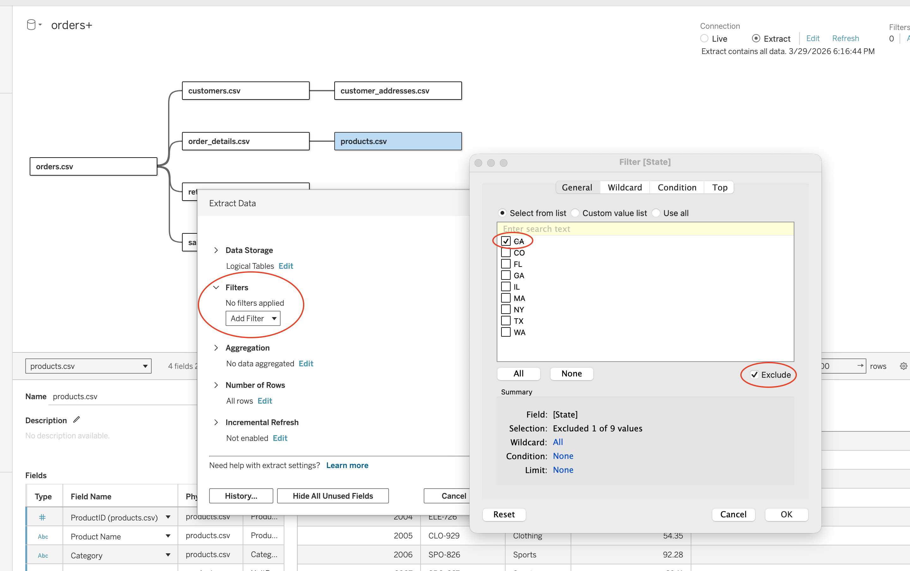
Data Source Filters
Data source filters restrict the data available to all sheets using that data source.
Use them when:
- A published source must be globally restricted
- Sensitive or irrelevant data should be hidden
Steps:
- Go to Data Source tab
- Click Filters (top right)
- Click Add
- Select a field (e.g. City)
- Define filter logic (include/exclude values)
- Click OK
Types:
- Dimension filters (categorical restriction)
- Measure filters (aggregated restriction)
- Extract filters (applied at extract level but part of data source setup)
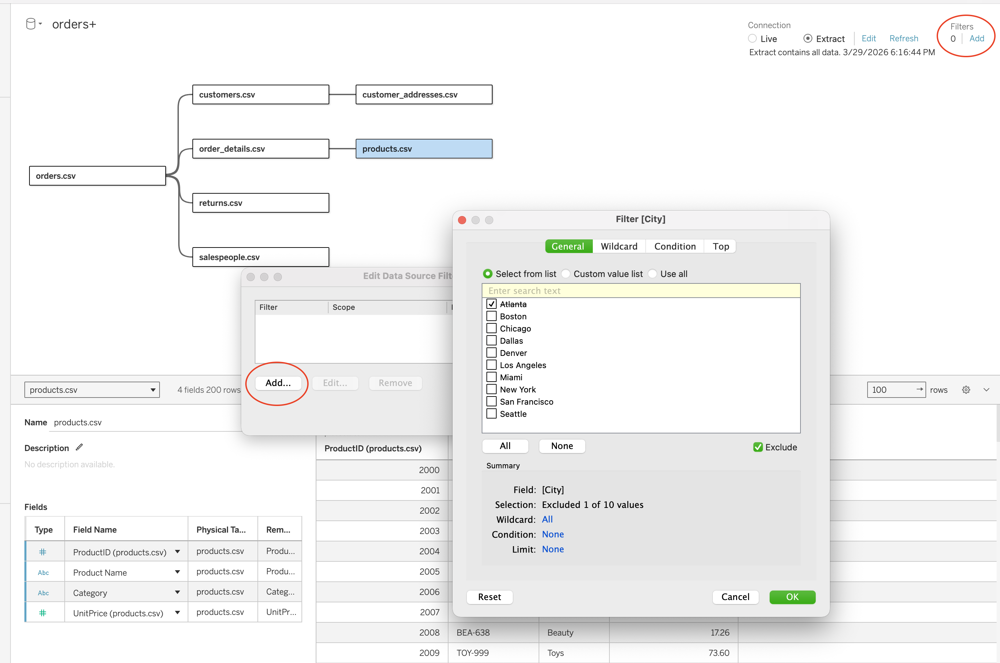
Context Filters
Context filters create the primary subset used by later filters.
Use them when:
- You need dependent filters
- You want a
FIXEDLOD to respect a filter - You want performance improvements in some complex cases
Steps:
- Add a filter to Filters shelf
- Right-click the filter
- Select Add to Context
- Filter turns grey (context applied)
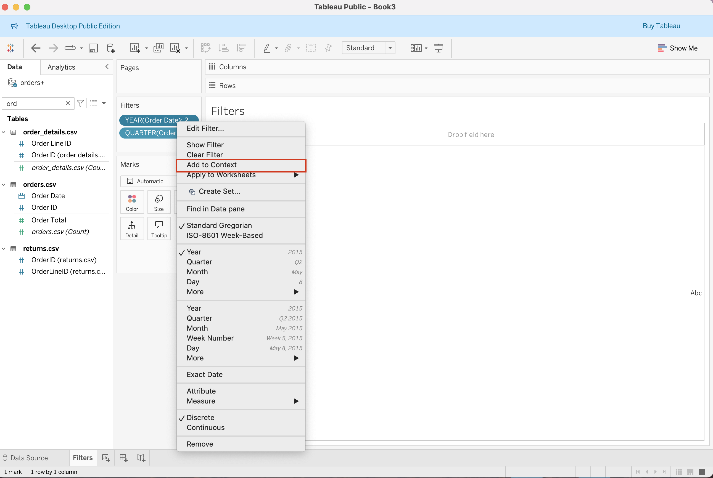
Dimension Filters
Dimension filters limit categorical values such as:
- Region
- Category
- Customer name
Steps:
- Drag a dimension (e.g. State) to Filters shelf
- Choose filter type:
- General (select values)
- Wildcard (pattern match)
- Condition (formula-based)
- Top (ranking)
- Select or exclude values
- Click OK
Filter modes (from screenshot):
- Select from list
- Custom value list
- Use all
- Include / Exclude
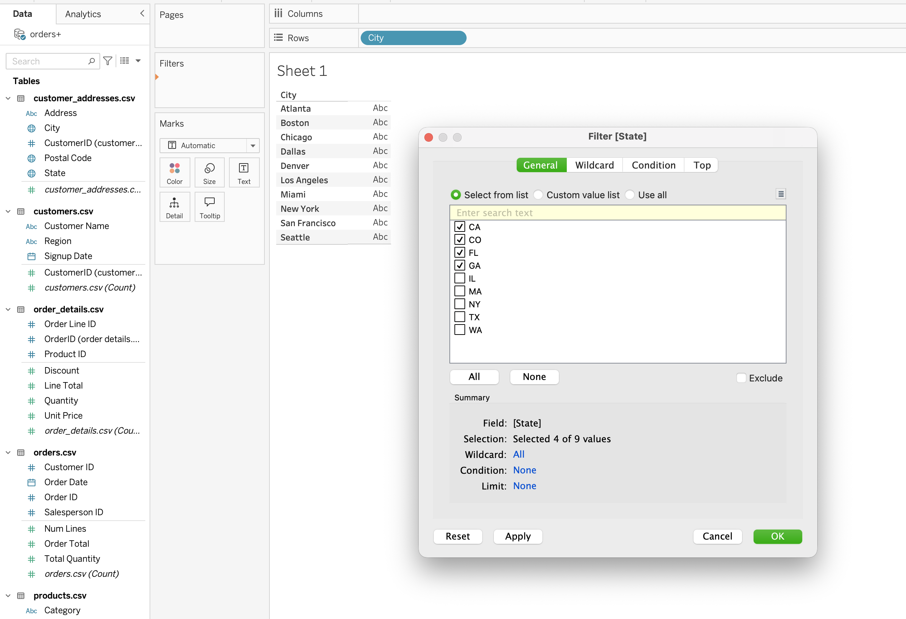
Measure Filters
Measure filters limit aggregated numeric values such as:
SUM([Sales])AVG([Discount])COUNTD([Customer ID])
Steps:
- Drag a measure to Filters shelf
- Choose aggregation (SUM, AVG, COUNTD etc.)
- Select filter type
Types:
- Range of values (min–max slider)
- At least (greater than or equal)
- At most (less than or equal)
- Special (null/non-null handling)
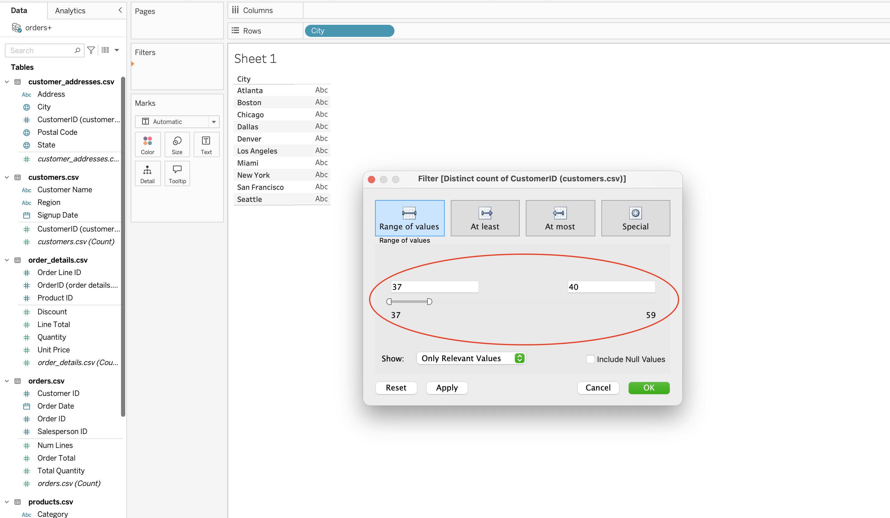
Date Filters
Date filters allow time-based slicing such as:
- Last quarter
- Between two dates
- Relative periods
Steps:
- Drag date field to Filters shelf
- Choose filter type
Types:
- Relative date (e.g. last 1 quarter)
- Range of dates
- Starting date
- Ending date
- Discrete date parts (year, month, quarter)
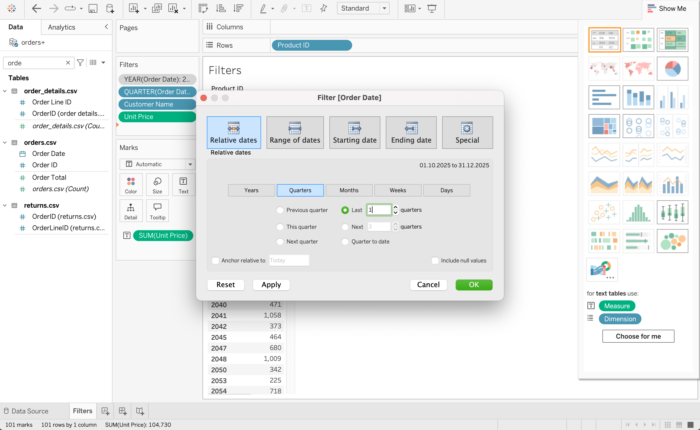
Top N Filters
Top N filters allow ranking by a chosen measure.
Example use cases:
- Top 10 customers by revenue
- Bottom 5 products by quantity
Steps:
- Drag dimension (e.g. Customer ID) to Filters shelf
- Go to Top tab
- Select By field
- Define Top N (e.g. Top 10 by COUNT(Order ID))
- Click OK
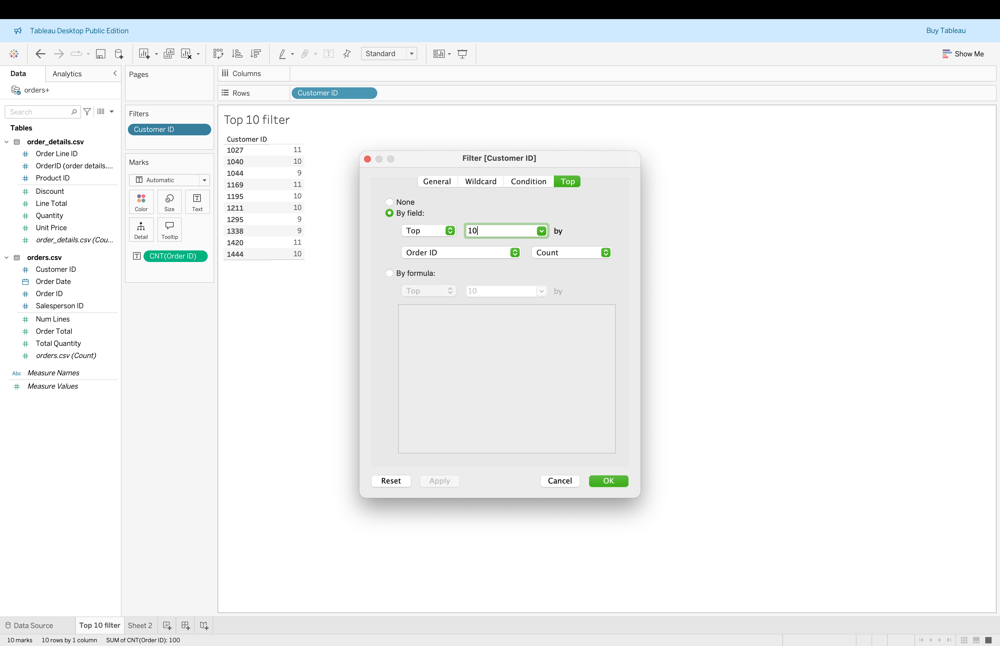
Interactive Filters
Interactive filters allow dashboard users to control the visible data.
Common UI forms include:
- Single value dropdown
- Multiple values list
- Slider
- Wildcard match
Steps:
- Right-click a filter on Filters shelf
- Click Show Filter
- Choose display type:
- Single value (list/dropdown/slider)
- Multiple values (list/dropdown/custom list)
- Wildcard match
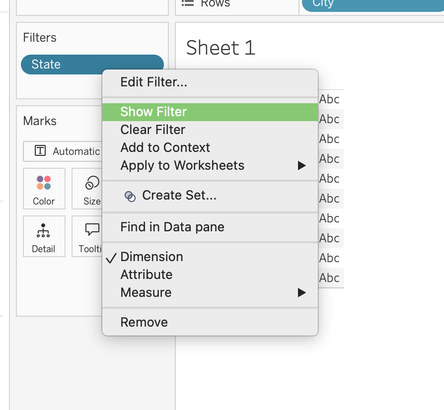
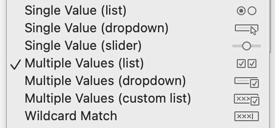
Advanced Chart Types
This session covers several advanced chart types commonly used in analytical dashboards.
Charts include:
- Area chart
- Stacked bar chart
- Bullet chart
- Bar-in-bar chart
- Box plot
- Dual-axis chart
- Histogram
- Heatmap
- Highlight table
- Treemap
Tableau Area Chart
Purpose
An area chart shows trends over time while emphasizing cumulative magnitude and contribution.
Steps to Create
Drag Order Date to Columns and set it to Month
Drag Customer ID to Rows and change it to Count (Distinct)
Change Marks type to Area
Drag City to Color
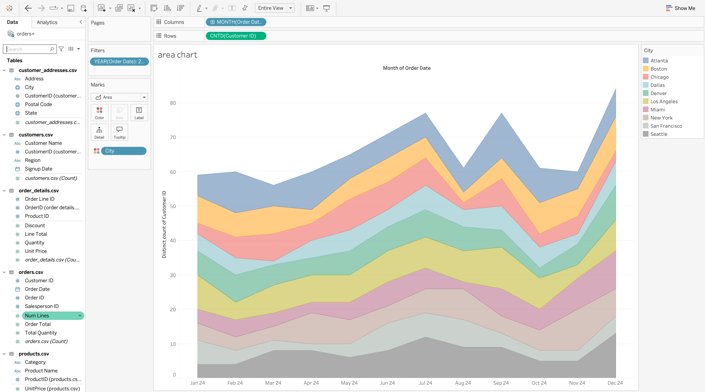
Best Use Cases
Use an area chart when:
- Time is the primary axis
- Category contribution matters
- Trend magnitude should be emphasized
Tableau Stacked Bar Chart
Purpose
A stacked bar chart shows total size and internal composition at the same time.
Steps to Create
- Drag Order Date to Columns and set it to Year
- Drag Measure Values to Rows
- Drag Measure Names to Color
- Filter Measure Names to keep only relevant measures
- Set the marks type to Bar
- Drag Measure Values to Label (hold Ctrl).
- Adjust colors and bar size.
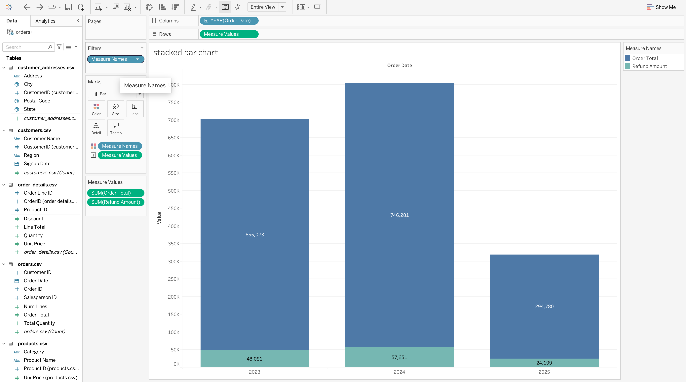
Best Use Cases
Use a stacked bar chart when:
- You need part-to-whole comparison
- Total values must remain visible
- Category composition is important
Tableau Bullet Chart
Purpose
A bullet chart compares actual performance against one or more benchmarks while conserving space.
Business Context
Typical usage includes:
- Actual vs target
- Category value vs average benchmark
- Performance band analysis
Steps to Create
- Drag Category to the Rows shelf.
- Drag SUM([Total Quantity]) to the Columns shelf.
- Open Show Me and select Bullet Graph.
- Tableau automatically:
- Creates the bullet bar
- Adds a reference line based on aggregation
- Right-click the axis → Add Reference Line
- Set the reference line to:
- Scope: Entire Table
- Value: Average of
SUM([Total Quantity])
- Scope: Entire Table
- Add additional reference lines or bands using:
- Percent of average (e.g. 60%, 80%, 100%)
- Adjust:
- Bar color (actual values)
- Band opacity (performance ranges)
- Tooltip text for clarity
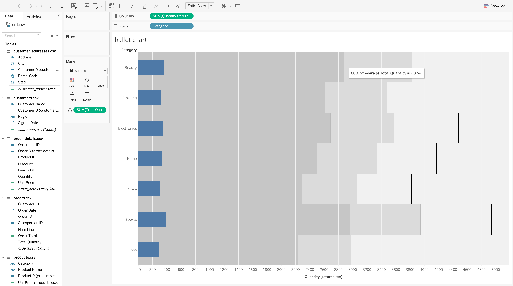
In this example:
- Blue bars represent the actual total quantity per Category
- Background bands represent performance ranges based on the overall average
- Vertical reference lines indicate benchmark values (e.g. average or percentage of average)
This allows quick identification of: - Categories performing below average - Categories performing near or above benchmark (e.g. 60% of Average Total Quantity = 2,874, as shown in the tooltip) - Relative performance without comparing categories directly
Best Use Cases
Use a bullet chart when:
- You need compact benchmark comparison
- Dashboards have limited space
- Performance against a target matters
Tableau Bar-In-Bar Chart
Purpose
A bar-in-bar chart compares two related measures for the same dimension.
Method 2: Separate Axes
Use when:
- Measures differ significantly in size
- Visibility is more important than strict proportionality
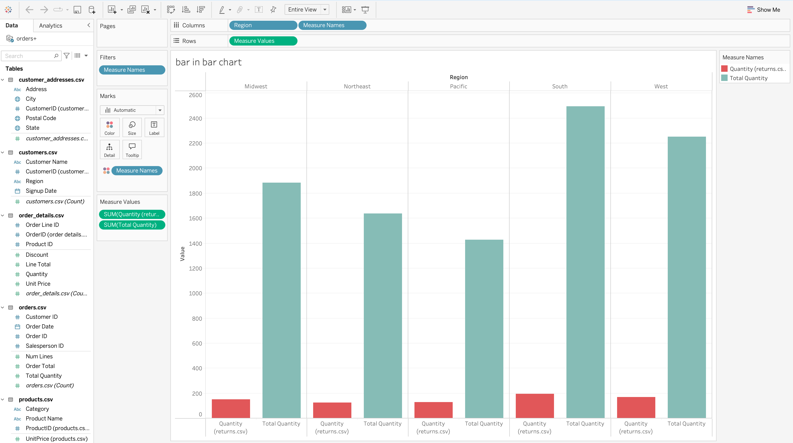
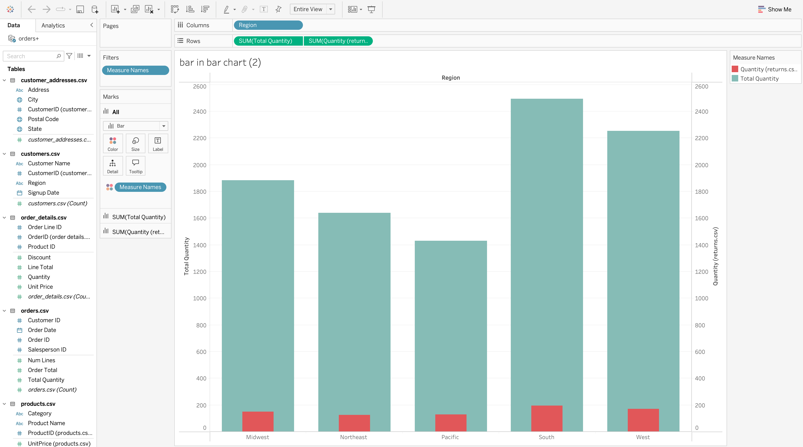
Tableau Box Plot
Purpose
A box plot shows the distribution of a measure, including spread, center, and outliers.
What It Shows
For each category, a box plot reveals:
- Median
- Interquartile range
- Whiskers
- Outliers
Steps to Create
- Drag MONTH([Order Date]) to the Columns shelf.
- Drag SUM([Order Total]) to the Rows shelf (this creates the bar chart).
- Drag SUM([Order Total]) to the Rows shelf a second time.
- On the second measure:
- Change Marks type to Line
- Apply a table calculation (e.g. Moving Sum or Running Total)
- Right-click the second axis and select Dual Axis.
- Synchronize axes if necessary and adjust colors.
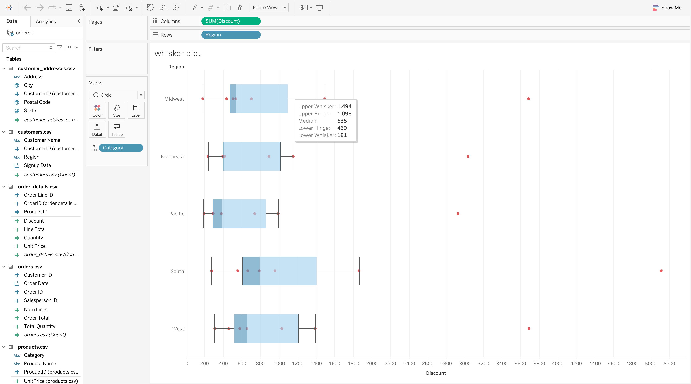
Best Use Cases
Use a box plot when:
- Variability matters more than totals
- You need to detect outliers
- Category-level distributions should be compared
Tableau Dual-Axis Chart
Purpose
A dual-axis chart overlays two measures in a single view.
Example Usage
- Bars for monthly sales
- Line for running total or moving average
Steps to Create
- Drag MONTH([Order Date]) to the Columns shelf.
- Drag SUM([Order Total]) to the Rows shelf (this creates the bar chart).
- Drag SUM([Order Total]) to the Rows shelf a second time.
- On the second measure:
- Change Marks type to Line
- Apply a table calculation (e.g. Moving Sum or Running Total)
- Right-click the second axis and select Dual Axis.
- Synchronize axes if necessary and adjust colors.
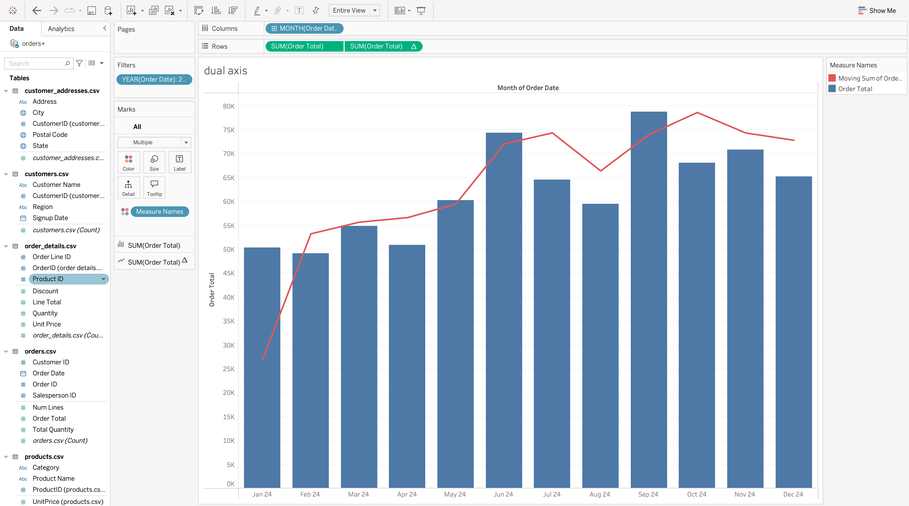
Best Use Cases
Use a dual-axis chart when:
- Two related measures should be analyzed together
- Time-based trend comparison is needed
- One measure provides context for the other
Tableau Histogram
Purpose
A histogram analyzes the distribution of a continuous numeric variable.
Steps to Create
- Right-click Order Total → Create → Bins
- Choose an appropriate bin size (based on data range and analysis goal)
- Drag Order Total (bin) to the Columns shelf
- Drag COUNT([Order Total]) to the Rows shelf
- Set Marks type to Bar
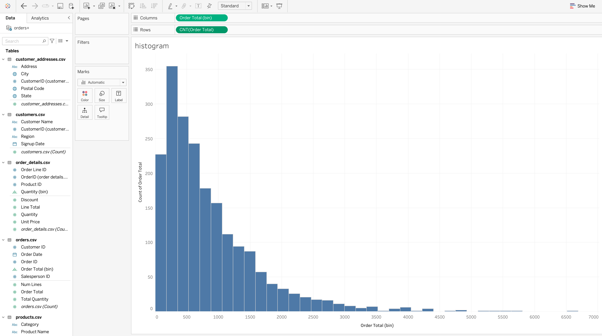
Interpretation
A histogram helps answer:
- Where most values cluster
- Whether the distribution is symmetric or skewed
- Whether extreme values exist
Best Use Cases
Use a histogram when:
- Distribution shape matters
- Numeric ranges matter more than categories
- Outliers or skewness should be detected
Tableau Heatmap
Purpose
A heatmap compares magnitude across two categorical dimensions using color intensity.
Steps to Create
- Drag City to the Rows shelf.
- Drag YEAR([Order Date]) to the Columns shelf.
- Drag SUM([Order Total]) to Color on the Marks card.
- Set Marks type to Square (or Automatic).
- Adjust the color palette to:
- Light colors → lower values
- Dark colors → higher values
- Light colors → lower values
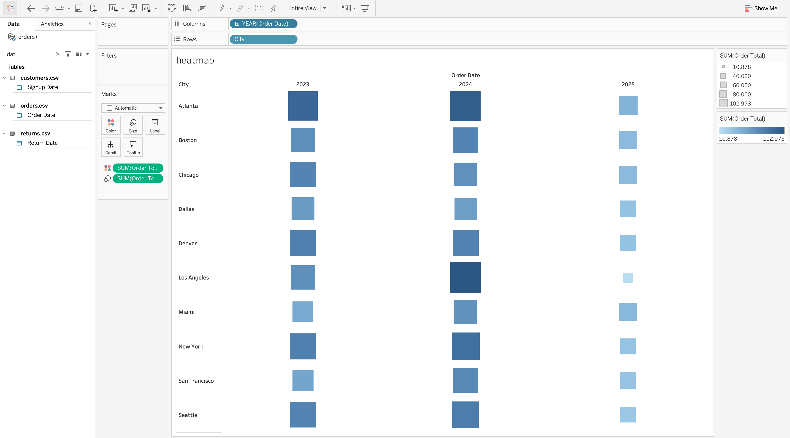
Best Use Cases
Use a heatmap when:
- Pattern discovery matters
- You need fast comparison across a matrix
- Magnitude can be encoded visually
Tableau Highlight Table
Purpose
A highlight table combines a table structure with color encoding so that users can see both exact values and relative intensity.
Steps to Create
- Drag City to the Rows shelf.
- Drag YEAR([Order Date]) to the Columns shelf.
- Drag SUM([Order Total]) to Color on the Marks card.
- Drag SUM([Order Total]) to Label on the Marks card.
- Set Marks type to Square.
- Adjust the color palette to reflect low → high values.
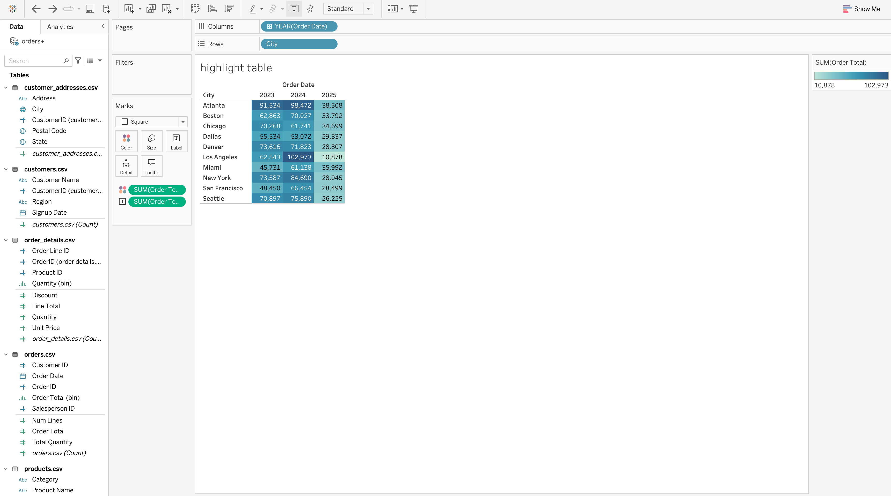
Highlight Table vs Heatmap
| Feature | Highlight Table | Heatmap |
|---|---|---|
| Exact values visible | Yes | No |
| Pattern emphasis | Yes | Yes |
| Precision | High | Lower |
Best Use Cases
Use a highlight table when:
- Exact values matter
- Color should support quick comparison
- The view functions as both report and analysis
Tableau Treemap
Purpose
A treemap shows part-to-whole relationships across many categories using area and color.
Steps to Create
- Drag State to Label (or first level in hierarchy).
- Drag City to Label (nested under State).
- Drag
COUNTD([Customer ID])to Size.
- Drag
COUNTD([Customer ID])to Color.
- Set Marks type to Treemap.
- Drag
COUNTD([Customer ID])to Label, right-click choose quick table qalqulations → percent of total.
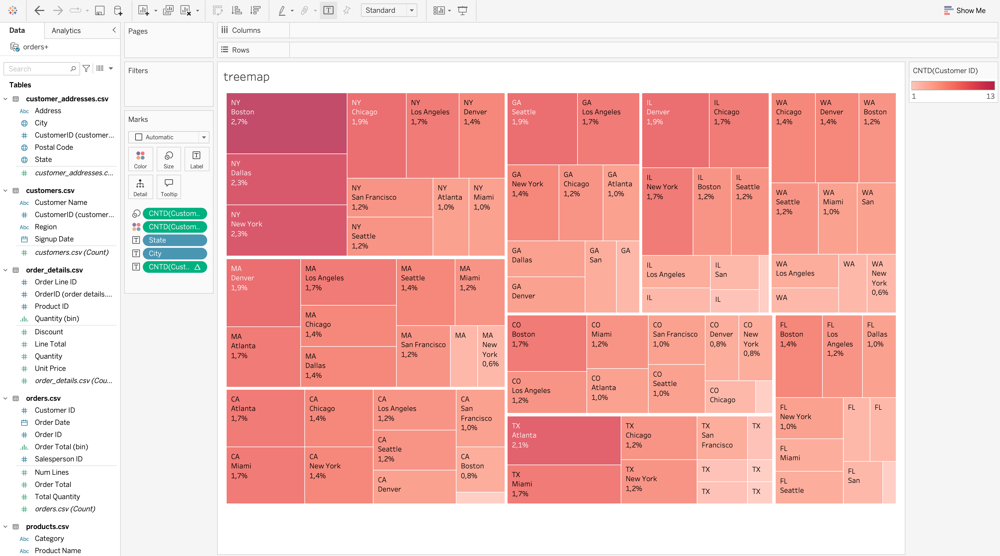
Best Use Cases
Use a treemap when:
- There are many categories
- Relative contribution matters
- Exact comparison is not the primary goal
Calculated Fields
Calculated fields allow you to create new logic from existing data.
They are one of Tableau’s most important analytical features.
Calculated fields can be used to:
- Create new metrics
- Transform data
- Segment records
- Build KPI logic
- Control dashboard behavior
Creating a Calculated Field
- Go to Analysis → Create Calculated Field
- Enter a name
- Write the formula
- Validate and save
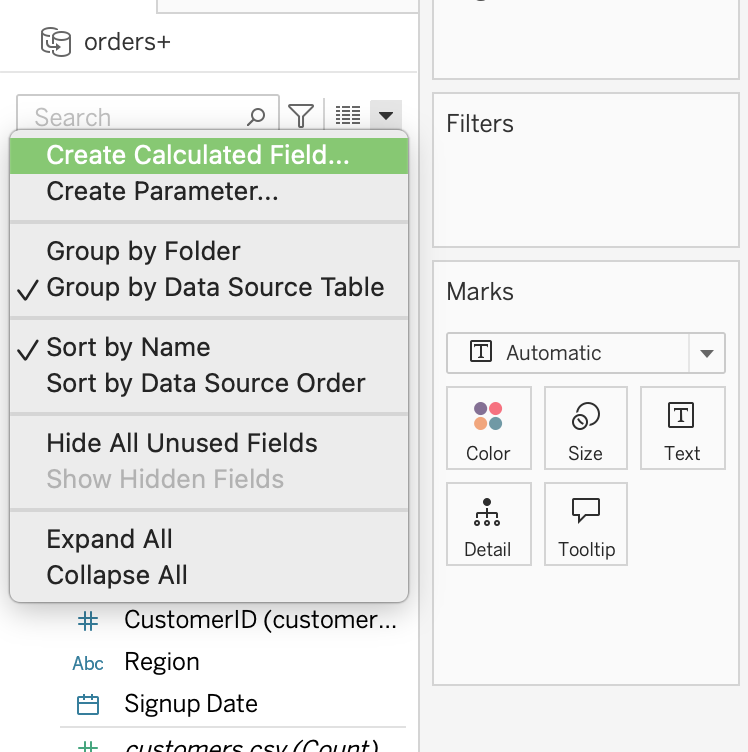
Calculation Evaluation Flow
Tableau calculations are evaluated at different stages.
flowchart LR A[Raw Data Rows] --> B[Row-Level Calculations] B --> C[Aggregation Based on View] C --> D[Aggregate Calculations] D --> E[LOD Override if Defined] E --> F[Visualization]
Row-Level Calculations
Row-level calculations operate on each individual record before aggregation.
Use row-level calculations when you need to:
- Create line-level revenue
- Standardize raw fields
- Build record-level flags
- Classify rows
Example: Order Line Revenue
[Quantity] * [Unit Price]Each row calculates its own revenue value.
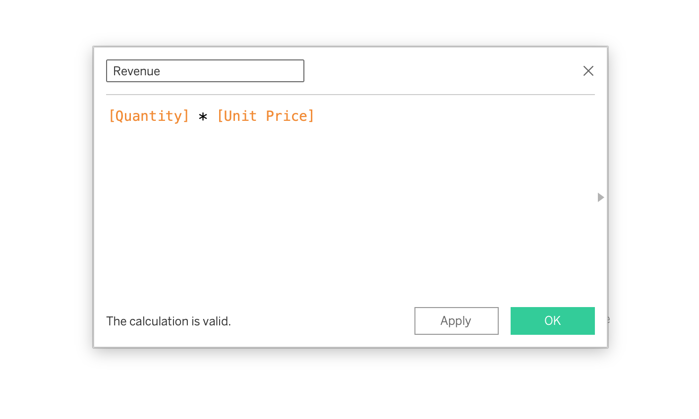
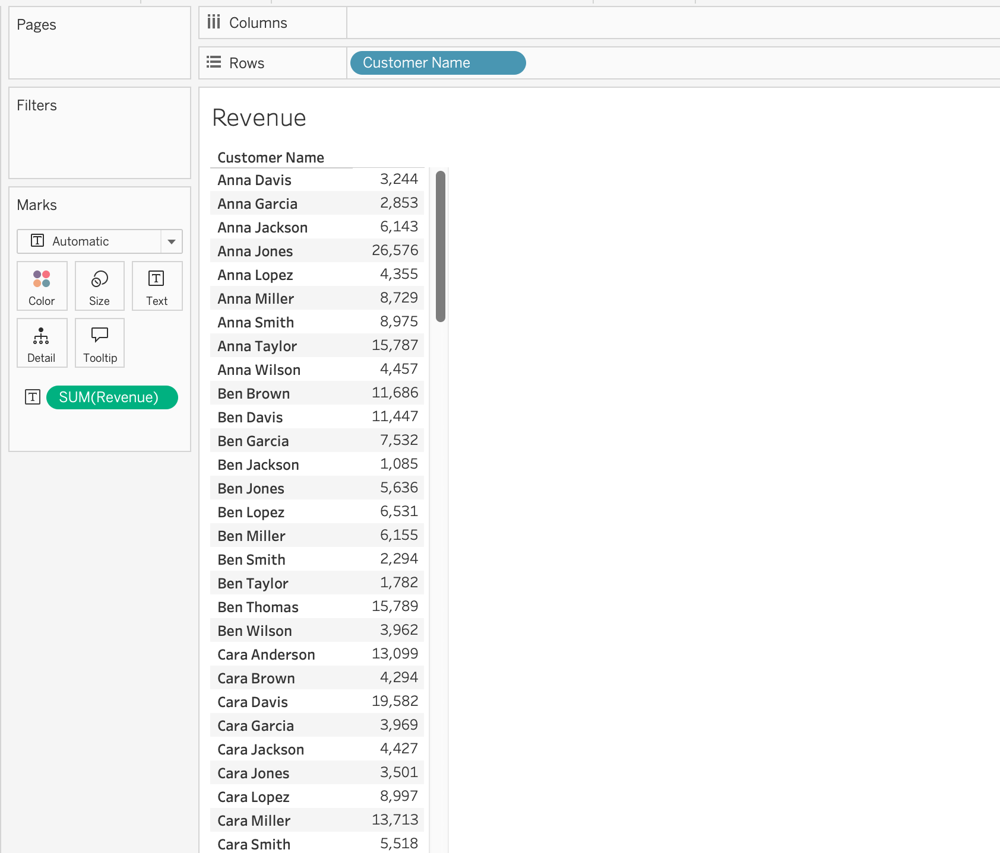
Example: Revenue Banding
IF [Quantity] * [Unit Price] >= 1000 THEN "High Value"
ELSE "Standard"
ENDAggregate Calculations
Aggregate calculations operate after Tableau groups data according to the dimensions in the view.
Common aggregate functions include:
SUM()AVG()COUNT()COUNTD()MIN()MAX()
Example: Average Order Value
SUM([Order Total]) / COUNTD([Order ID])This formula returns average revenue per order at the current level of aggregation.
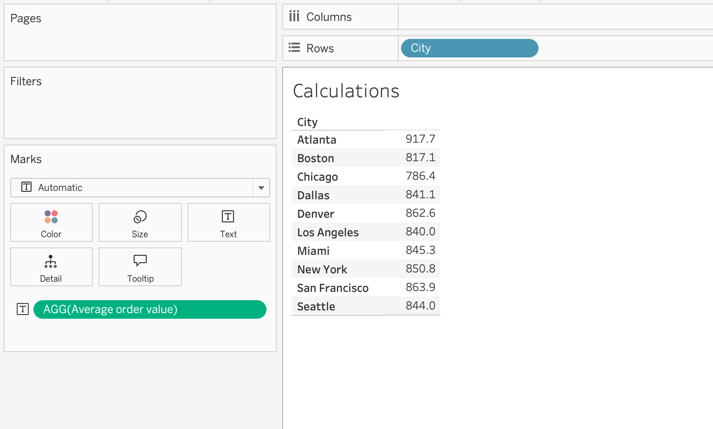
Important
Tableau does not allow incorrect mixing of row-level and aggregate fields in the same expression. For example, this is invalid:
SUM([Sales]) / [ORDER ID]A corrected version would aggregate both sides:
SUM([Sales]) / COUNT([ORDER ID])Level of Detail (LOD) Expressions
LOD expressions explicitly control the granularity of a calculation independently of the view.
There are three main types:
FIXEDINCLUDEEXCLUDE
flowchart TD A[View Level of Detail] --> B[Default Aggregation] B --> C[LOD Expression] C --> D[FIXED] C --> E[INCLUDE] C --> F[EXCLUDE]
FIXED
FIXED calculates at a specified level regardless of view dimensions.
Example: Customer Lifetime Value
{ FIXED [Customer ID] : SUM([Order Total]) }Use FIXED when:
- A metric must remain stable across sheets
- A KPI should be defined at a business entity level
- The calculation should ignore most view-level dimensional changes
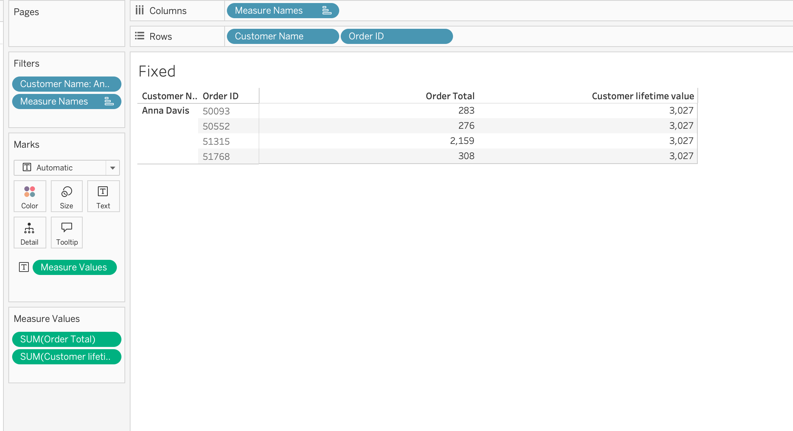
Example: Minimum Order Date per Customer
{ FIXED [Customer ID] : MIN([Order Date]) }This calculation returns the first purchase date for each customer.
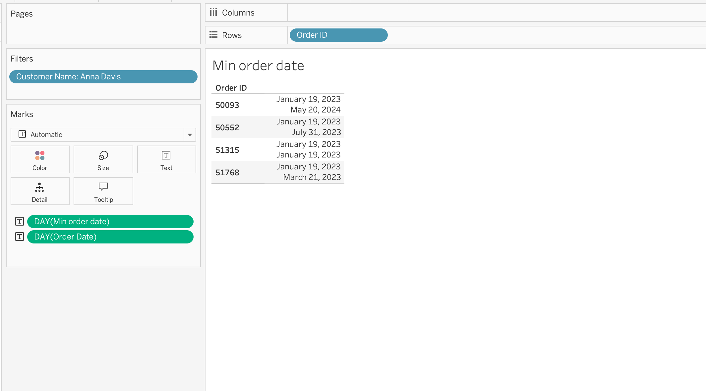
INCLUDE
INCLUDE adds detail to the calculation level even if that dimension is not in the view.
Example:
{ INCLUDE [Region] : AVG([Order Total]) }Use INCLUDE when:
- Extra detail should influence the result
- The view is less granular than the analytical logic
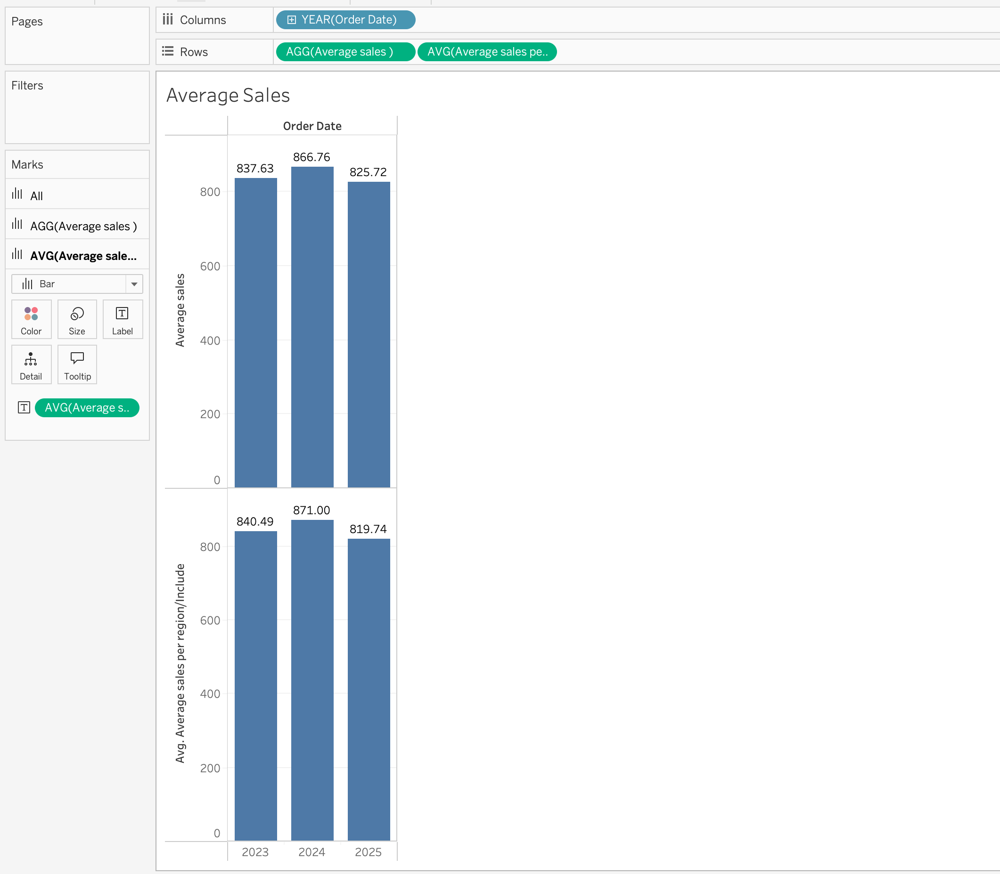
EXCLUDE
EXCLUDE removes a dimension from the calculation level even if it appears in the view.
Example:
{ EXCLUDE [Region] : AVG([Order Total]) }Use EXCLUDE when:
- A dimension is needed visually
- But should not affect the aggregation logic
Even if Region appears in the view, this calculation computes the average as if the Region dimension did not exist.
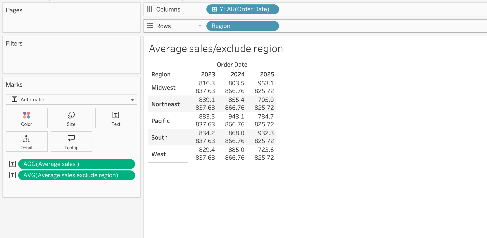
Comparison Example
AVG([Order Total])
→ Calculates average sales per Region and Year{ INCLUDE [Region] : AVG([Order Total]) }
→ Calculates average sales per Region, then aggregates to Year{ EXCLUDE [Region] : AVG([Order Total]) }
→ Calculates average sales per Year ignoring Region{ FIXED [Region] : AVG([Order Total]) }
→ Calculates average sales per Region regardless of Year
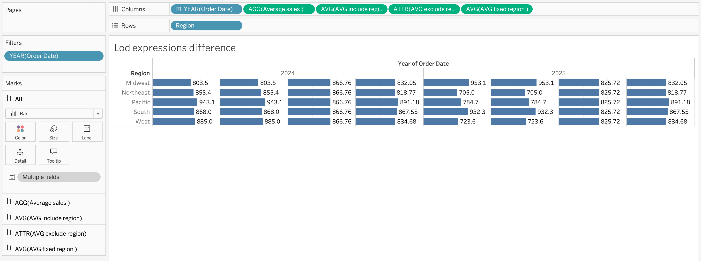
Important
LOD expressions are essential for building consistent KPIs, customer-level metrics, cohort logic, and benchmark calculations.
Tableau Functions
Tableau provides many built-in functions that can be used in calculated fields.
Main categories include:
- Aggregate functions
- Number functions
- String functions
- Logical functions
- Type conversion functions
Aggregate Functions
Aggregate functions perform calculations on multiple rows and return a single value.
Examples:
SUM([Order Total])→ total revenue from orders datasetAVG([Unit Price])→ average product price from products.csvCOUNT([Order ID])→ total number of ordersCOUNTD([Customer ID])→ number of unique customers
Use case with dataset:
- Calculate total sales:
SUM([Order Total])- Count unique customers placing orders:
COUNTD([Customer ID])Number Functions
Number functions perform mathematical operations on numeric fields.
Examples:
ROUND([Order Total], 2)→ rounds order value to 2 decimal placesABS([Discount])→ removes negative sign from discount valuesCEILING([Unit Price])→ rounds price up to nearest integerFLOOR([Unit Price])→ rounds price down
Use case with dataset:
- Round order totals:
ROUND([Order Total], 0)- Convert negative discounts to positive values:
ABS([Discount])String Functions
String functions manipulate text fields.
Examples:
UPPER([Customer Name])→ converts names to uppercaseLOWER([City])→ converts city names to lowercaseLEFT([Product ID], 3)→ extracts first 3 characters of product IDTRIM([Customer Name])→ removes extra spaces
Use case with dataset:
- Standardize city names:
UPPER([City])- Extract product category prefix:
LEFT([Product ID], 3)Logical Functions
Logical functions apply conditional logic to create categories or flags.
Use case with dataset: - Segment orders based on value:
IF [Order Total] >= 500 THEN "Large Order"
ELSE "Small Order"
END- Categorize products:
CASE [Category]
WHEN "Beauty" THEN "Personal Care"
WHEN "Clothing" THEN "Apparel"
ELSE "Other"
ENDType Conversion Functions
Type conversion functions change data types between string, number, and date.
Examples:
STR([Customer ID])→ convert numeric ID to textINT([Unit Price])→ convert price to integerDATE([Order Date])→ ensure field is treated as dateFLOAT([Discount])→ convert value to decimal
Use case with dataset:
- Convert Customer ID to string for concatenation:
STR([Customer ID])- Convert price to integer:
INT([Unit Price])Date functions and spatial functions will be explored in the next session.
Parameters
A parameter is a workbook variable that can store a value chosen by the user.
Parameters can be used in:
- Calculations
- Filters
- Reference lines
- Axis logic
Key Characteristics
Parameters:
- Do not filter data automatically
- Must be referenced in logic
- Do not follow filter order of operations
- Can store numbers, strings, dates, or booleans
flowchart LR A[Parameter Value] --> B[Calculated Field] B --> C[View Logic] C --> D[Displayed Result]
To Use a Parameter
- Create the parameter
- Use it in a calculated field, filter, or reference line
- Show the parameter control to the user
Step-by-step
- In the Data pane, click the dropdown menu
- Select Create Parameter…
- Configure:
- Name
- Data type
- Allowable values (List / Range / All)
- Name
- Click OK
- Right-click the parameter → Show Parameter
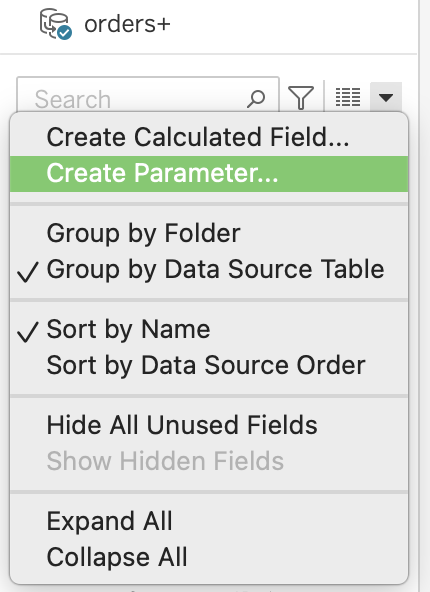
Metric Switching
A parameter can let users switch between metrics.
Example parameter-driven calculation:
CASE [Metric]
WHEN 1 THEN SUM([Revenue])
WHEN 2 THEN SUM([Quantity])
ELSE SUM([Profit])
ENDSteps
- Create parameter:
- Name: Metric
- Data type: Integer
- Values:
- 1 → Revenue
- 2 → Quantity
- 1 → Revenue
- Create calculated field:
CASE [Metric]
WHEN 1 THEN SUM([Revenue])
ELSE SUM([Quantity])
END- Drag the calculated field into the view
- Right-click parameter → Show Parameter
- Use dropdown to switch metrics
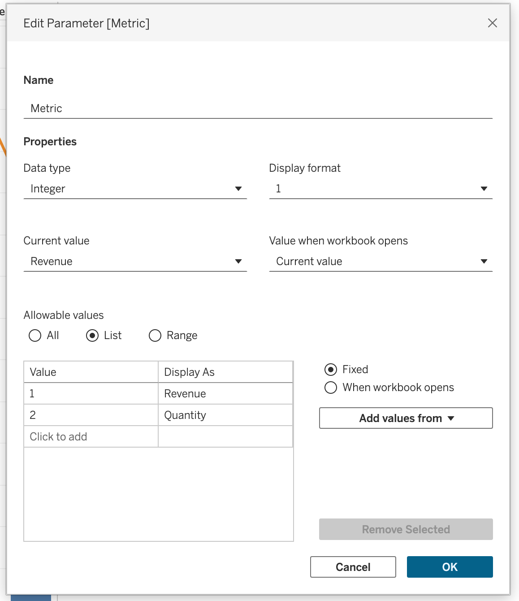
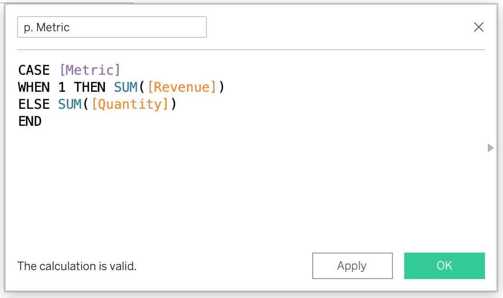
Note
Name of the calculated field should be identical to the parameter name and can include p. in the name to make it clear that it is a calculation for the parameter.
Dimension Switching
A parameter can switch dimensions in the view.
Example:
CASE [Location Category]
WHEN 'State' THEN [State]
ELSE [City]
ENDSteps
- Create parameter:
- Name: Location Category
- Data type: String
- Values: State, City
- Create calculated field:
CASE [Location Category]
WHEN 'State' THEN [State]
ELSE [City]
END- Drag calculated field to Rows or Columns
- Show parameter
- Switch between State and City
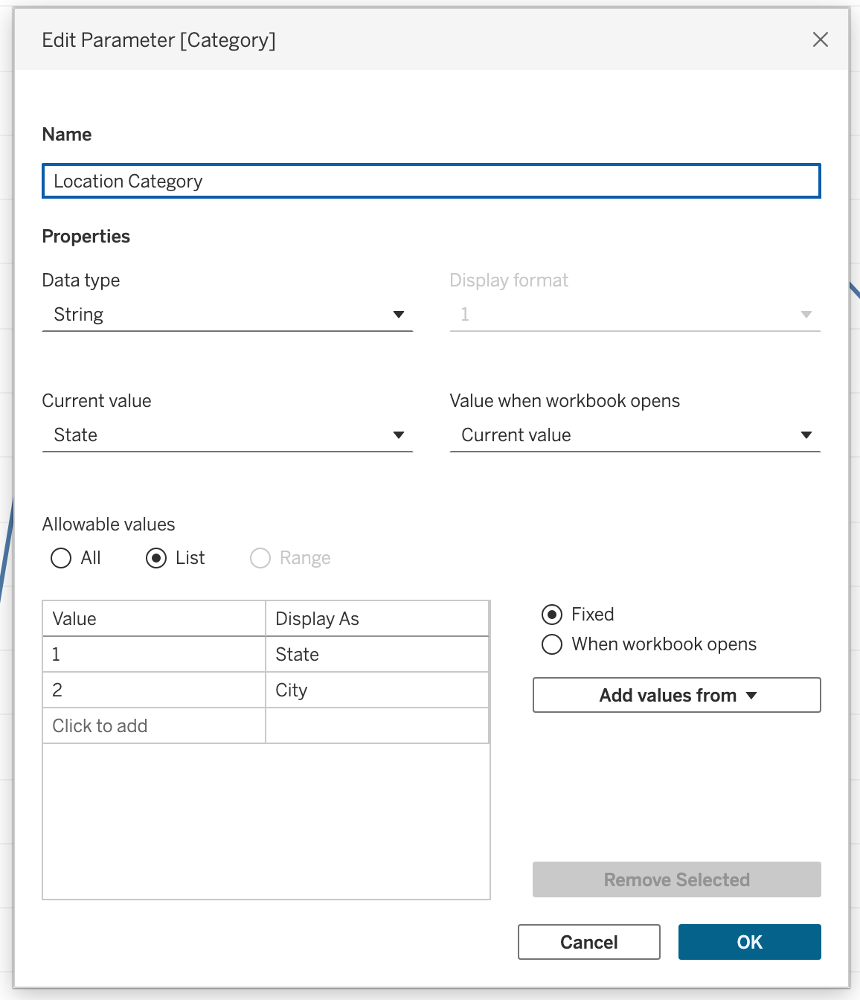
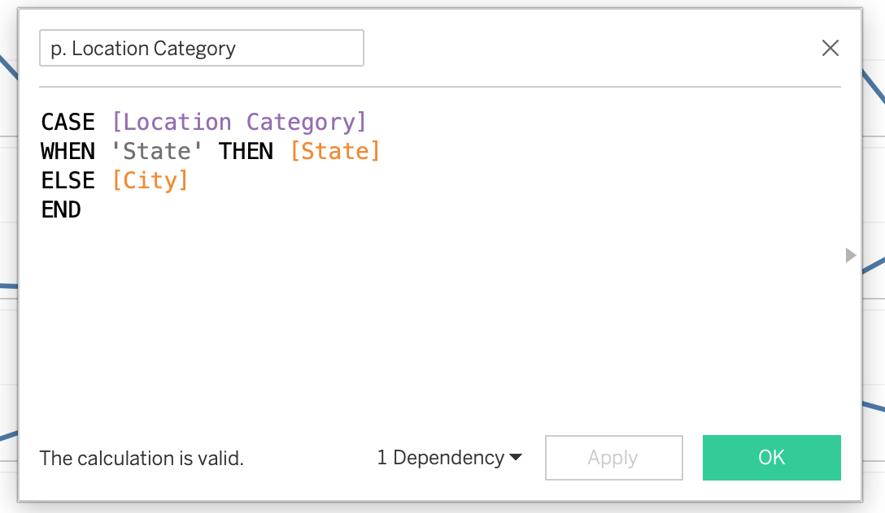
Boolean Parameter Logic
A boolean-style parameter can toggle analysis behavior.
Example:
IF [Is Florida] THEN
[State] = 'FL'
ELSE
[State] <> 'FL'
ENDSteps
- Create parameter:
- Name: Is Florida
- Data type: Boolean
- Create calculated field:
IF [Is Florida] THEN
[State] = 'FL'
ELSE
[State] <> 'FL'
END- Drag calculation to Filters
- Select True
- Show parameter to toggle
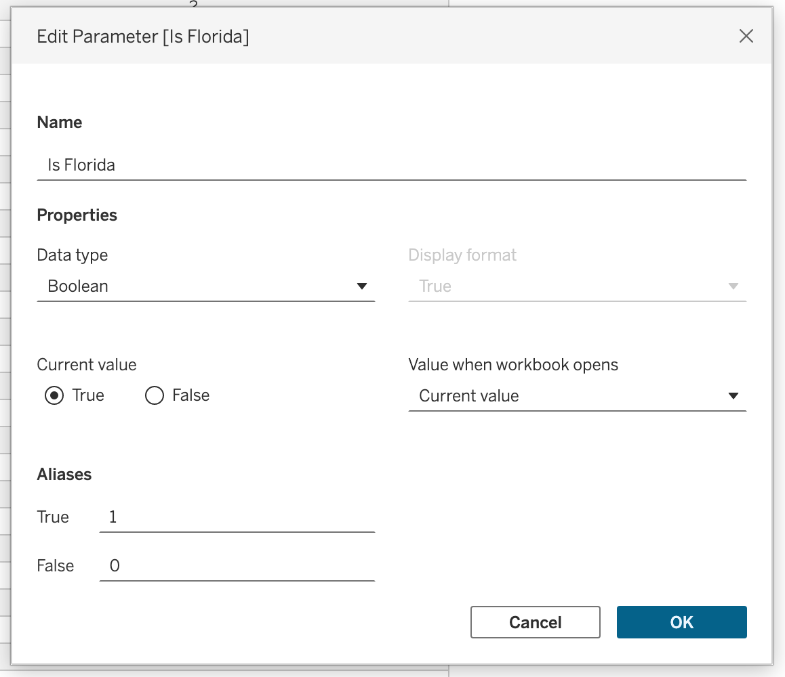
Top N with Parameter
A numeric parameter can drive Top N analysis.
Common workflow:
- Create parameter Top Values
- Use it in a Top tab filter
- Let the user choose how many values to show
Steps
- Create parameter:
- Name: Top values
- Data type: Integer
- Drag dimension (Customer Name) to Filters
- Go to Top tab
- Select:
- By field
- Top [Top values] by SUM(Revenue)
- By field
- Show parameter
Date Parameter Logic
Parameters can also support date-based filtering.
Example:
[Order Date] <= [Select Return Date]Steps
- Create parameter:
- Name: Select Return Date
- Data type: Date
- Add values from Return Date
- Create calculated field:
[Order Date] <= [Select Return Date]- Drag calculation to Filters
- Keep True
- Show parameter
Tip
You can set the default value of the date parameter to a dynamic value such as:
- TODAY()
- MAX([ORDER DATE])
Set When workbook opens → MAX(Order Date) to always show the latest data.
Filters, Parameters, and Calculated Fields
Understanding how filters and parameters affect calculations is essential for correct results.
Dimension Filters
Dimension filters are applied after FIXED LOD expressions but before table calculations.
Implications:
- They do not affect
FIXEDby default - They do affect
INCLUDEandEXCLUDE - They affect table calculations because they change the visible data
Example:
{ FIXED [Customer ID] : SUM([Sales]) }If you add a regular dimension filter on [Region], the FIXED result does not automatically change.
Measure Filters
Measure filters are applied after aggregation.
They affect:
- Aggregated results
- Visible marks
- Table calculations
They do not recompute FIXED LOD expressions.
Context Filters
Context filters change the evaluation path by creating a subset earlier in the pipeline.
Implications:
- Context filters do affect
FIXED - They can improve performance in some cases
- They support dependent filters
Example:
{ FIXED [Customer ID] : SUM([Sales]) }If [Region] is placed in context, the calculation is now evaluated only for the selected region.
Table Calculations
Table calculations are applied after most filters and depend on the displayed marks.
They are influenced by:
- Sorting
- Layout
- Partitioning
- Addressing
- Visible data
flowchart TD A[Source Data] --> B[LOD and Aggregations] B --> C[Filters] C --> D[Visible Marks] D --> E[Table Calculations]
Note
Parameters change logic only when they are explicitly referenced. Filters change the actual subset of data being evaluated.
Example: Comparing SQL Logic with Tableau Logic
Some logic can be prepared in SQL before Tableau, while other logic can be built directly inside Tableau.
SQL Example: Precompute Revenue
SELECT
order_id,
quantity,
unit_price,
quantity * unit_price AS revenue
FROM dbo.order_details;Tableau Example: Same Logic in a Calculated Field
[Quantity] * [Unit Price]When to Prefer SQL
Prefer SQL when:
- Logic should be standardized
- Data should be reshaped before Tableau
- Performance depends on pre-aggregation
When to Prefer Tableau
Prefer Tableau when:
- Logic is view-specific
- Analysts need flexibility
- Interactivity or parameterization is required
Session 2 Task: Intermediate Sales & Customer Analysis Dashboard
Step 1: Data Modeling
Using the provided dataset:
- Use relationships as the main data modeling approach
- Ensure correct connections between:
- Orders and Customers
- Orders and Order Details
- Order Details and Products
- Orders and Customers
Validation
- Create a simple view:
- SUM(Order Total)
- COUNTD(Order ID)
- SUM(Order Total)
- Confirm:
- No duplication occurs
- Aggregations are correct
- No duplication occurs
Step 2: Calculated Fields
Create the following calculations:
Revenue per Order
SUM([Order Total]) / COUNTD([Order ID])Total Quantity Sold
SUM([Quantity])Customer Type
IF COUNTD([Order ID]) >= 3 THEN "Repeat"
ELSE "New"
ENDStep 3: LOD Expression
Create a customer-level metric:
{ FIXED [Customer ID] : SUM([Order Total]) }Use it to:
- Compare individual orders vs total customer value
- Identify high-value customers
Step 4: Filters
Apply the following filters:
- Category filter (Dimension filter)
- Order Date filter (Relative date → last 1 year)
- Add Region as a Context filter
Validation
- Observe how filters impact:
- Aggregations
- LOD calculations
- Aggregations
Step 5: Parameters
Metric Switching
Create a parameter:
- Name: Metric
- Values:
- Revenue
- Quantity
- Revenue
Calculation:
CASE [Metric]
WHEN "Revenue" THEN SUM([Order Total])
ELSE SUM([Quantity])
ENDTop N Customers
Create parameter:
- Name: Top N
- Type: Integer
Use it in Top filter:
- Top [Top N] Customers by SUM(Order Total)
Step 6: Visualizations
Create the following:
- Line chart → Sales over time
- Bar chart → Top customers
- Heatmap → Category vs Region
- Scatter plot → Customer (Orders vs Revenue)
Step 7: Dashboard
Build a dashboard including:
- At least 3 visualizations
- Parameter controls:
- Metric switch
- Top N
- Metric switch
- Filters:
- Category
- Date
- Region
- Category